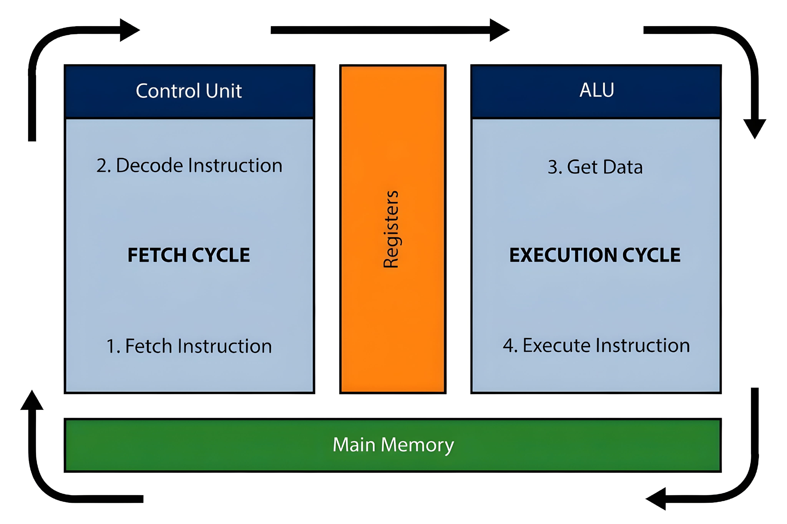
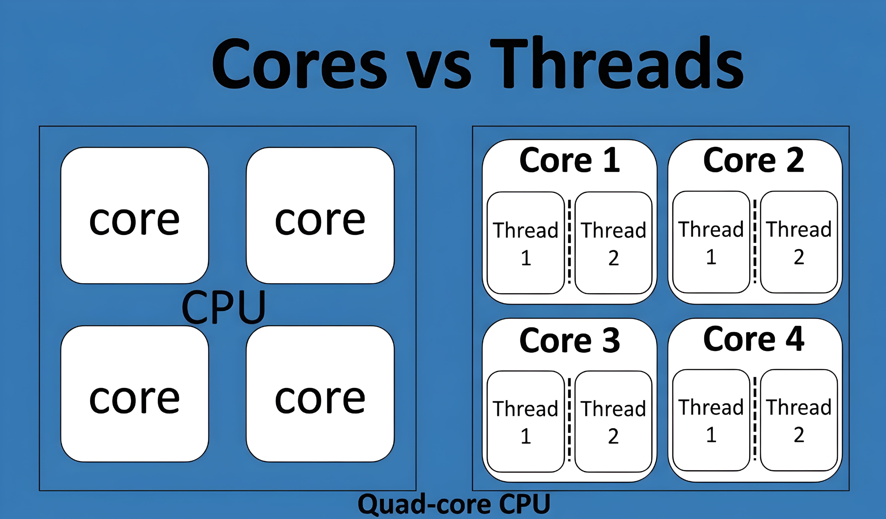
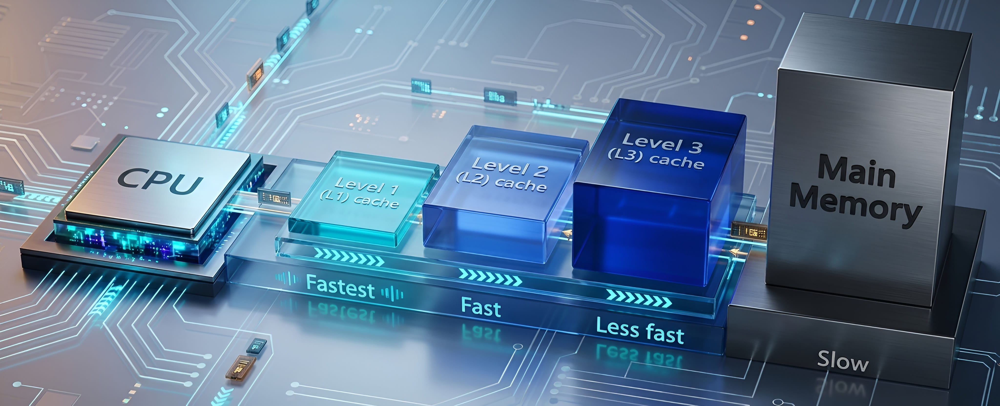
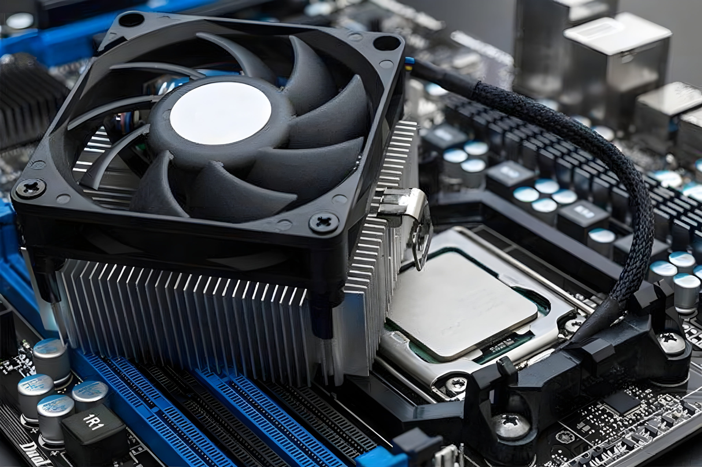
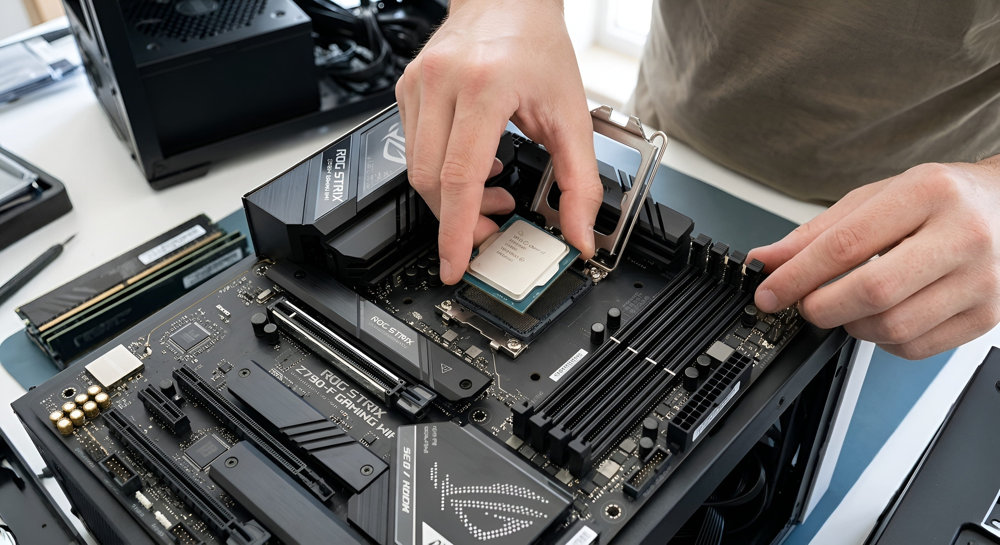

Every time you open an app, type a message, browse a website, or play a game, your computer has to process instructions. One of the main components responsible for this work is the CPU (Central Processing Unit). It performs calculations, follows program instructions, and helps the operating system and other hardware work together.
People often call the CPU the brain of a computer. The comparison is not perfect, but it is useful: just as your brain helps you understand and respond to information, the CPU processes the instructions that tell a computer what to do. In this guide, you will learn how a CPU works, what its important specifications mean, and how to choose one that suits your needs.
1. What Is a CPU?
CPU stands for Central Processing Unit. It is the main general-purpose processor in a computer. It reads and executes instructions from programs, performs mathematical and logical operations, and controls or coordinates many activities inside the system.
For example, when you open a web browser, the operating system and browser give the computer instructions to load the program. The CPU executes many of those instructions while RAM provides the working space and the storage drive supplies the program files. The graphics processor helps draw the browser window on your screen.
A CPU is found in desktop computers, laptops, servers, smartphones, tablets, smart TVs, and many other electronic devices. The design differs between devices, but the basic purpose is similar: process instructions and data.
In simple words: A CPU is the processor that carries out instructions and calculations so a computer can run software and perform tasks.
2. Why Is the CPU Important?
The CPU is important because software cannot do useful work unless a processor executes its instructions. It helps run the operating system, open applications, respond to input, perform calculations, and coordinate work with other components.
- Running software: It executes instructions from browsers, games, office apps, and other programs.
- Making calculations: It handles arithmetic and logical operations used throughout computing.
- Managing tasks: It processes work from different programs and shares time across their threads.
- Supporting games: It handles game rules, character behaviour, physics, and other CPU-side work.
- Running the operating system: It executes the instructions that make Windows, Linux, and other operating systems function.
A CPU does not do everything by itself. It works with RAM, storage, the motherboard, the GPU, and other devices. A computer feels fast when these parts work well together.
3. What Does a CPU Do?
A CPU carries out many kinds of instructions. Some are simple, while others are part of much larger tasks.
Mathematical operations
The CPU can add, subtract, multiply, divide, and perform other calculations. When a calculator app works out 25 + 15, the processor executes instructions that produce the answer 40.
Logical decisions
Programs often need to compare values or check conditions. For example, a program may ask whether a password matches, whether a number is greater than ten, or whether a user has permission to open a file. The CPU performs the operations needed to evaluate these conditions.
Moving and processing data
The CPU reads data from registers, cache, and RAM, processes it, and writes results where the program needs them. It also communicates with other system components through the platform's memory and input/output systems.
Coordinating software tasks
When you listen to music while browsing and downloading a file, the operating system schedules many software threads. The CPU executes the work assigned to its available cores. This is why core count, thread support, and operating-system scheduling can affect multitasking.
4. How Does a CPU Work?
A useful basic model of CPU operation is the fetch-decode-execute cycle. It describes how a processor gets an instruction, understands it, and carries it out. Modern CPUs use advanced techniques to work on many instructions at once, but this model explains the foundation.

Step 1: Fetch
The processor retrieves the next instruction it needs. The instruction may be available in the CPU cache; otherwise, the processor may need to obtain it from RAM. A program is made up of many instructions that tell the CPU what work to perform.
Step 2: Decode
The CPU decodes the instruction to determine what it means and which resources are needed. For example, it may identify an instruction that adds two values or compares two numbers.
Step 3: Execute
The relevant execution unit performs the operation. An arithmetic logic unit can handle many integer calculations and logical comparisons, while other specialized units handle other types of work.
Step 4: Store or use the result
The result may be placed in a register, written to cache or memory, or passed to another part of the processor. The program then uses that result as it continues.
A simple example: Imagine a restaurant worker receiving an order, reading it, preparing the meal, and handing it over. Fetch is receiving the order, decode is understanding it, execute is preparing it, and the final step is delivering the result. A CPU performs its instruction cycle much faster and in a far more complex way.
Modern processors also use pipelining, which overlaps different stages of multiple instructions. They may use branch prediction to guess which path a program will take and out-of-order execution to work on ready instructions without always waiting for earlier ones. These techniques help improve performance.
5. Main Parts of a CPU
A processor contains several important structures. Their exact design differs between CPU models, but these are useful concepts to know.
Control unit
The control logic directs instruction processing and coordinates activity inside the CPU. It helps determine which operations should happen and when. Think of it as a coordinator that keeps different parts working together.
Arithmetic logic unit (ALU)
The ALU performs many arithmetic and logical operations, such as adding values, comparing numbers, and carrying out Boolean logic. Modern CPUs may have multiple execution units rather than one single ALU.
Registers
Registers are very small, very fast storage locations inside a CPU core. They hold values, addresses, and intermediate results that the processor needs immediately. Registers are much smaller than RAM but are directly available to the processor's execution resources.
Cache
Cache keeps copies of data and instructions that may be needed again soon. It reduces the time the CPU spends waiting for information from system memory. Cache levels are explained in a later section.
Execution units and clock circuits
Execution units perform particular kinds of work, including integer calculations, floating-point operations, and vector operations. Clock and timing circuits provide signals that help coordinate processor activity.
6. What Are CPU Cores?
A CPU core is a processing engine within a processor. Each core can execute instructions independently, allowing a multi-core CPU to work on multiple streams of instructions at the same time.
Imagine one person sorting a pile of letters. Now imagine four people sharing the pile. If the work can be divided, the four people may finish sooner. Multiple CPU cores can work in a similar way when software can split its work into parallel tasks.

Common core counts include 2-core (dual-core), 4-core (quad-core), 6-core (hexa-core), 8-core (octa-core), 10-core, 12-core, and 16-core processors. High-end desktop and server processors can have many more.
Do more cores always mean a faster CPU?
No. More cores can improve performance in software that can use them, such as some video editors, renderers, and scientific applications. Some everyday apps and games depend more on the speed of a few cores. Architecture, clock speed, cache, memory, power limits, and software design also matter.
Performance cores and efficiency cores
Some modern processors combine different core types. Performance cores are designed for demanding, latency-sensitive work, while efficiency cores are designed to handle suitable background or lighter tasks with a focus on power efficiency. The operating system and processor scheduling features help decide where work should run. Not every CPU uses this design.
7. What Are CPU Threads?
A software thread is a sequence of instructions that a program can run. A program may use several threads so different parts of its work can progress independently. The operating system schedules these threads on the processor.
When people discuss a CPU's thread count in a specification, they usually mean hardware threads or logical processors exposed by the CPU. Technologies such as Simultaneous Multithreading (SMT) allow one physical core to maintain more than one hardware thread. Intel calls its implementation Hyper-Threading on supported processors.
For example, a four-core processor may support eight hardware threads. This does not turn it into an eight-core CPU. The two threads on a core share many of that core's physical resources, but they can help keep those resources busy when one thread is waiting.
CPU cores vs. threads
| Feature | Core | Hardware thread |
|---|---|---|
| What it is | A physical processing engine | A logical execution context |
| Main purpose | Provides execution resources | Helps a core manage instruction streams |
| How it relates to performance | Adds substantial processing capacity | Can improve use of existing core resources |
Threads are especially useful when applications can divide work into parallel tasks. Video editing, rendering, compression, and some games can benefit, although the improvement depends on the software and CPU design.
8. What Is CPU Clock Speed?
Clock speed is the frequency of a processor's clock, measured in hertz. Modern CPU speeds are commonly shown in gigahertz (GHz). One GHz equals one billion clock cycles per second. A 3.5 GHz clock therefore has a frequency of 3.5 billion cycles per second.
A clock cycle is not the same as one completed instruction. A CPU can complete more than one instruction during a cycle, and some instructions take multiple cycles. The amount of work completed depends on the processor design and the instructions being run.
Base clock
The base clock is a reference operating frequency specified by the manufacturer under defined conditions. Actual frequency changes with workload, temperature, power settings, and the number of active cores.
Boost clock
Boost clock is a higher frequency that a CPU may reach when there is enough thermal and power headroom. A processor advertised with a maximum boost of 5.0 GHz does not necessarily run at 5.0 GHz all the time. The maximum may apply only to certain cores and workloads.
Does a higher GHz always mean a faster CPU?
No. A newer processor may complete more work per clock cycle than an older one. Core count, architecture, cache, memory speed, power limits, and software also affect performance. Compare real benchmarks for the tasks you care about instead of choosing by GHz alone.
9. What Is CPU Cache? L1, L2, and L3 Explained
CPU cache is a small, fast memory system that stores copies of data and instructions the processor may need soon. It helps reduce the time the CPU waits for information from system RAM.
Think of studying at a desk. You keep the book you are using right beside you, while other books stay on a shelf. The book on the desk is easier to reach. Cache serves a similar purpose by keeping useful information close to the processor.

L1 cache
Level 1 (L1) cache is usually the smallest and fastest cache level. It is typically very close to a core's execution resources. Many designs separate L1 instruction cache from L1 data cache.
L2 cache
Level 2 (L2) cache is generally larger than L1 and usually a little slower. It provides another nearby place for the core to find data and instructions.
L3 cache
Level 3 (L3) cache is often larger and may be shared by multiple cores. Its exact arrangement differs between processors. Some CPUs use additional cache levels or different cache designs.
Cache hit and cache miss
A cache hit happens when the CPU finds the requested information in the cache level it checks. A cache miss happens when it does not find it there and must look in another level or system memory. A hit is usually faster than retrieving data from RAM.
More cache can help some workloads, including certain games and data-heavy applications. But bigger cache alone does not guarantee a faster processor. Cache latency, architecture, core design, and the type of work all matter.
10. What Is CPU Architecture?
CPU architecture describes the design and rules that shape how a processor executes instructions. Two related terms are useful:
- Instruction Set Architecture (ISA): The set of instructions and programmer-visible rules that software uses when communicating with a processor.
- Microarchitecture: The internal design a processor uses to implement that instruction set, including its pipelines, execution units, caches, and other structures.
Two processors can support the same instruction set but have different internal designs and performance. It is like two people following the same recipe but using different kitchen layouts and tools.
x86-64
x86-64, also called x64 or AMD64, is widely used in desktop PCs, laptops, and servers. Intel and AMD both make processors that support this instruction-set family.
Arm
Arm-based processors are common in smartphones and tablets, and are also used in laptops, servers, and other devices. Arm is an instruction-set architecture family licensed to many chip designers and manufacturers.
Architecture can affect performance, energy use, software compatibility, and supported features. Check software and operating-system compatibility when choosing a device, especially when moving between processor platforms.
11. What Are CPU Generations?
A processor generation is a product generation or family introduced by a manufacturer. New generations may bring changes to the CPU design, performance, power efficiency, integrated graphics, memory support, and connectivity. The size of the improvement varies; a newer model is not automatically faster than every older one.
For example, in many older Intel Core desktop model names, the first one or two digits after the hyphen indicate the generation. The Core i5-12400 is a 12th-generation model, the i5-13400 is 13th generation, and the i5-14400 is 14th generation. Newer Intel Core and Core Ultra naming uses a different scheme, so check the exact model.
AMD Ryzen naming also varies by product family and year. Do not assume that every digit in a Ryzen model number directly identifies its CPU architecture or release generation. Manufacturer product pages are the safest place to confirm the details.
12. What Is a CPU Socket?
A CPU socket is the physical connection on a motherboard where a compatible desktop processor is installed. It connects the CPU to the motherboard's power and communication systems. The processor must match the socket and also be supported by the motherboard firmware.
Examples include Intel LGA1700 and AMD AM4 and AM5. These socket names refer to particular platform designs; they are not interchangeable. Even when two CPUs use the same socket, a motherboard may need a BIOS update or may not support a particular model at all.
Before buying a processor, check the motherboard manufacturer's CPU support list, supported BIOS version, chipset, and memory requirements. Physical fit alone does not guarantee compatibility.
13. What Is Integrated Graphics?
Integrated graphics is a graphics processor built into the CPU or included in the same processor package. It can handle display output and many everyday graphics tasks without a separate graphics card. Depending on the model, it may be suitable for web browsing, office work, video playback, video calls, and some light gaming.
A dedicated graphics card is a separate component with its own graphics processor and usually its own video memory (VRAM). It is generally better suited to demanding games, 3D work, and some creative applications, but it adds cost, power use, and heat.
| Feature | Integrated graphics | Dedicated graphics |
|---|---|---|
| Location | Built into or packaged with the CPU | Separate graphics card |
| Memory | Usually shares system RAM | Usually has dedicated VRAM |
| Typical use | Everyday display and light graphics | Demanding games and graphics workloads |
| Extra purchase | May be included with the CPU | Usually purchased separately |
Not every CPU includes usable integrated graphics. Check the exact model and the motherboard's display connections. If a processor has no enabled graphics, the computer generally needs a separate GPU to provide display output.
14. What Is CPU TDP?
TDP stands for Thermal Design Power. It is a manufacturer-defined thermal design specification, commonly expressed in watts. It helps system builders understand the cooling requirements for a processor under the manufacturer's stated conditions.
TDP is not the same as the exact electricity a CPU uses at every moment. Actual power consumption changes with workload, clock speed, voltage, temperature, and platform settings. Some processors can use more power than a simple TDP figure suggests, especially during boost operation.
Manufacturers may use different power terms. Intel, for example, uses terms such as Processor Base Power and Maximum Turbo Power for many newer products. Always consult the official specification page for the exact CPU rather than comparing TDP figures from different brands as if they were measured identically.
15. What Is CPU Cooling?
A CPU produces heat while it works. A cooling system transfers that heat away from the processor so it can operate within its designed temperature limits. The cooler must be suitable for the processor and the computer case.

Air cooling
An air cooler usually has a metal heatsink and one or more fans. The heatsink absorbs and spreads heat from the CPU, while the fan moves air through its fins to carry heat away. Air coolers range from small basic models to large tower coolers.
Liquid cooling
An all-in-one liquid cooler commonly includes a cold plate and pump on the CPU, tubes, a radiator, and fans. Liquid carries heat from the CPU to the radiator, where the fans help release it into the air. Liquid cooling can suit some high-power systems, but it is not required for every PC.
Thermal paste
Thermal paste fills tiny gaps between the CPU's heat spreader and the cooler's contact plate. This improves heat transfer. The cooler must still be mounted with the correct pressure, and the paste should be applied according to the cooler or CPU manufacturer's guidance.
Thermal throttling
Thermal throttling occurs when a processor reduces its operating speed or power to control temperature. If a CPU becomes too hot, it may lower its clock speed to protect itself. Dust, poor airflow, a loose cooler, a failed fan, or an unsuitable cooling system can contribute to overheating.
16. Different Types of Processors
Processors are designed for different devices and workloads. These categories describe common uses rather than strict technical boundaries.
Desktop processors
Desktop CPUs are made for desktop computers and can be used for everyday work, gaming, programming, video editing, and other tasks. Many use a socket and can be upgraded when the motherboard supports the replacement CPU.
Laptop processors
Laptop CPUs are designed to balance performance, heat, and battery life in a compact system. Many modern laptop processors are soldered to the motherboard, so they are not normally user-upgradeable.
Server processors
Server CPUs are designed for workloads such as cloud services, databases, virtualization, and web hosting. They may support large memory capacities, multiple sockets on supported platforms, and features important to enterprise systems.
Mobile processors and systems-on-a-chip
Smartphones and tablets commonly use mobile chips designed for low power use. Many are systems-on-a-chip (SoCs), combining a CPU, GPU, memory controller, and other specialized components in one package. Some SoCs also include image, video, wireless, or AI acceleration hardware.
Workstation and high-end desktop processors
Workstation and high-end desktop processors target demanding professional tasks such as 3D rendering, engineering, large creative projects, and scientific workloads. They may offer more cores, memory channels, or platform expansion than mainstream desktop CPUs.
17. Intel vs. AMD: Which Processor Is Better?
Intel and AMD are two major makers of PC processors. Both offer products for everyday computing, gaming, content creation, and professional workloads. Neither brand is always the best choice in every price range or task.
Intel product families include Intel Core, Intel Core Ultra, and Intel Xeon. AMD product families include Ryzen, Ryzen Threadripper, and EPYC. These families target different kinds of computers, from mainstream PCs to workstations and servers.
When comparing two CPUs, look at independent benchmarks for the software you use, price, core and thread count, power use, cooling needs, integrated graphics, motherboard cost, memory support, and upgrade options. Compare exact models rather than choosing by brand name alone.
18. What Affects CPU Performance?
CPU performance is the result of several factors working together. No single specification tells the whole story.
- Architecture and instructions per clock: Different designs can complete different amounts of work at the same clock frequency.
- Clock speed: Higher operating frequency can help when other factors are similar, but it is not a complete performance measure.
- Core and thread count: More cores can help software that can divide work across multiple cores.
- Cache: Cache capacity and design can reduce delays when the CPU needs data again.
- RAM: Memory capacity, speed, and latency can affect workloads that frequently access system memory.
- Cooling and power limits: Temperature and available power can affect how long a CPU sustains high clock speeds.
- Software optimization: An application must be designed to use the CPU resources available to it.
For example, a video renderer may use many cores efficiently, while an older application may rely heavily on one or two fast cores. This is why the best processor depends on the work you plan to do.
19. How to Choose the Right CPU
Start with your actual needs instead of buying the CPU with the biggest numbers. These steps can help you make a sensible choice.
Step 1: Decide what you will use the computer for
For browsing, documents, and online classes, a modern entry-level or mid-range CPU may be enough. Gaming, programming, video editing, 3D rendering, and professional applications can need different levels of performance. Check the recommended specifications of the software you use.
Step 2: Compare real performance
Look for trustworthy reviews and benchmarks that test the exact models you are considering. Use results from applications similar to your own workload. Do not rely only on GHz, core count, or a product tier such as Core i5 or Ryzen 5.
Step 3: Check cores, threads, and cache
These specifications can help explain how a CPU is designed, but they should be considered alongside benchmark results. More cores are useful only when your applications can use them.
Step 4: Decide whether you need integrated graphics
If you do not plan to buy a separate graphics card, confirm that the CPU has integrated graphics and that the motherboard has the display output you need. If you plan to use a dedicated GPU, check whether the CPU model still needs integrated graphics for troubleshooting or other uses.
Step 5: Check motherboard and RAM compatibility
Confirm the socket, chipset, BIOS support, memory type, and motherboard CPU support list. Also check the number of memory channels and the memory speeds officially supported by the platform.

Step 6: Consider power and cooling
Make sure the power supply, motherboard power delivery, case airflow, and CPU cooler are suitable for the chosen processor. A powerful CPU may need a stronger cooling solution.
Step 7: Compare the total platform cost
The CPU is only one part of the build. Include the cost of the motherboard, RAM, cooler, graphics card if needed, and power supply. A slightly cheaper processor on a more affordable compatible platform may offer better overall value.
20. How to Check Which CPU Your Computer Has
You do not need to open your computer to identify the processor. On Windows, you can use any of these built-in tools.
Using Windows Settings
- Open the Start menu and select Settings.
- Choose System, then select About.
- Look under Device specifications for the Processor entry.
Using Task Manager
- Press Ctrl + Shift + Esc.
- Open the Performance tab.
- Select CPU to see the processor name, current speed, core count, and logical processor count.
Using System Information
- Press Windows + R.
- Type
msinfo32and press Enter. - Find the Processor entry in the System Summary.
To check CPU temperature, use a reputable hardware-monitoring utility or a tool provided by your PC or motherboard maker. Temperature readings and safe limits vary by processor model, so compare the result with the manufacturer's guidance.
21. Common CPU Problems and What to Check
Not every computer problem is caused by the CPU. Cooling, RAM, storage, power, software, and motherboard faults can create similar symptoms. Check the whole system before replacing a processor.
CPU overheating
Possible causes: dust buildup, poor case airflow, a failed fan, a loose cooler, or incorrect cooler installation. What to check: clean dust carefully, confirm that fans spin, check cooler mounting, and compare temperatures with the CPU manufacturer's limits.
High CPU usage
Demanding applications, background updates, browser tabs, or malware can use a large amount of CPU time. Open Task Manager, sort processes by CPU usage, and identify the application responsible. High usage is not automatically a fault; some tasks are designed to use all available cores.
A slow computer
A slow PC may have too little RAM, a nearly full or slow storage drive, too many startup apps, overheating, or software problems. Check memory, disk, and CPU activity before deciding that the processor needs an upgrade.
Unexpected shutdowns or restarts
Overheating, unstable power, a faulty power supply, motherboard problems, memory errors, or unstable overclocking can cause shutdowns. If the computer repeatedly switches off, stop stressing the system and have the hardware checked if basic troubleshooting does not resolve it.
CPU not detected after an upgrade
Check whether the motherboard supports the processor and BIOS version. Also check power connections and installation. Do not force a CPU into a socket; inspect the socket and processor for damage and follow the motherboard manufacturer's installation instructions.
22. Frequently Asked Questions
What does CPU stand for?
CPU stands for Central Processing Unit. It is the main general-purpose processor that executes instructions and performs calculations in a computer.
Is a CPU the same as a processor?
In everyday computer discussions, CPU and processor usually refer to the same component. CPU is the abbreviation for Central Processing Unit.
Why is the CPU called the brain of a computer?
It is called the brain because it executes program instructions, performs calculations, and helps coordinate many computer operations. The comparison is a simple way to explain its central role.
How many CPU cores do I need?
It depends on your software and workload. Everyday tasks may run well on a modern entry-level CPU, while rendering, video editing, and other parallel workloads can benefit from more cores.
Is a 4-core CPU still good?
A modern four-core CPU can handle many everyday tasks, but its performance depends on its architecture, clock speed, power limits, and the programs you use. Check benchmarks for your workload.
Is a 6-core CPU better than a 4-core CPU?
A six-core CPU has more physical cores and may perform better in software that uses them. It is not automatically faster in every task; the exact models and workload matter.
Does a higher GHz mean a faster CPU?
Not always. Clock speed is only one factor. Architecture, performance per clock, cores, cache, memory, cooling, and software can all affect speed.
What is the difference between a CPU and a GPU?
A CPU is designed for a wide range of general-purpose instructions. A GPU is designed to perform many graphics and parallel-processing operations efficiently. They work together in many computers.
Can a computer work without a CPU?
A normal computer cannot run its operating system and applications without a working main processor. Some devices contain several processors for different jobs, but they still need processing hardware to operate.
Does every CPU have integrated graphics?
No. Some processors include integrated graphics and others do not. Check the specifications of the exact model, especially if you plan to use the computer without a dedicated graphics card.
Can I upgrade my CPU?
Many desktop CPUs can be upgraded if the motherboard, BIOS, and cooling system support the new model. Many laptop processors are soldered to the motherboard and are not designed for user replacement.
Does more CPU cache mean better performance?
A larger cache can help some applications, but cache size alone does not determine performance. Cache design, latency, architecture, and workload matter too.
What is the difference between a CPU and RAM?
The CPU executes instructions and processes data. RAM temporarily holds the programs and data that the computer is currently using. The CPU accesses RAM when it needs information that is not already in its cache.
What is a CPU bottleneck?
A CPU bottleneck occurs when the processor limits the performance of the system or another component in a particular workload. For example, a CPU may not prepare game data quickly enough to keep a powerful graphics card fully busy in some situations.
Final Thoughts
The CPU is a central part of every computer. It executes instructions, performs calculations, and works with RAM, storage, the motherboard, and other components to make software run. Understanding cores, threads, clock speed, cache, architecture, sockets, graphics, and cooling makes it easier to understand what a processor can do.
When choosing a CPU, start with the tasks you need to perform. Compare real-world performance, check compatibility, consider cooling and total platform cost, and do not judge a processor by one number alone. The right CPU is the one that gives you the performance you need for your budget.